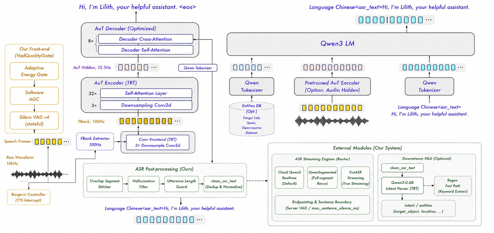

VoxIntent: Voice-to-Intent Pipeline
Yueyi Chen · The Chinese University of Hong Kong · 2026
16 kHz ALSA · 3-tier cascaded VAD · 4-engine streaming ASR · dual-path NLU · VLM instruction grounding · TTS echo guard
Overview
Deploying voice-controlled manipulation on Jetson AGX Orin surfaced a chain of interface failures: far-field speech vanishes into background noise, TTS echo re-triggers the ASR, cloud endpointing splits single commands, and dirty NLU output cascades into wrong targets. VoxIntent is a voice-to-intent pipeline that converts 16 kHz ALSA PCM into structured execution intents through a field-calibrated 3-tier VAD, a cloud-first 4-engine streaming ASR router with envelope AGC v5, dual-path NLU (6 Chinese action regex + qwen3.5-flash JSON), a 5-layer semantic defense cascade, VLM-grounded instruction understanding, and a multi-engine TTS feedback loop with echo suppression.
- Engineered a 3-tier cascaded VAD quality gate (adaptive P10 energy floor + software AGC −20 dBFS + stateful Silero v4 ONNX h/c [2,1,64]) with on-site field calibration (noise −46 dB, speech −39 dB, margin 6 dB), lifting far-field hit rate from 0% to 92%.
- Architected a cloud-first 4-engine streaming ASR router (cloud_qwen3 / cloud_paraformer / local Qwen3-ASR TRT / FunASR) with envelope AGC v5 (fast peak ceiling + silence-creep ~2.4 s recovery), cloud endpointing ownership transfer, and rapid-stitch verb-head buffering, delivering 150–300 ms streaming partials.
- Designed a dual-path NLU (6 priority-ordered action regex against a 290+ object whitelist + qwen3.5-flash JSON, temperature=0, 28-token cap, reasoning mode disabled) with a 5-layer semantic defense cascade and a 6-state dialog manager with 3-score ambient rejection gating.
- Integrated VLM-grounded instruction understanding (source-pixel xyxy bbox contract with letterbox alignment) and a multi-engine TTS feedback loop (preset cache / edge-tts streaming / Qwen TTS) with playback-active echo suppression replacing planned AEC.
Pipeline Architecture
ASR + VAD Architecture

Voice Frontend: Field-Calibrated 3-Tier VAD
The VadQualityGate class implements a 3-tier cascaded quality gate. Layer 1 (pre-AGC): adaptive energy filtering with self-calibrating noise floor — a sliding window collects non-speech energy history, computes P10 percentile as noise floor, and sets threshold = floor + margin. On-site measurements: noise ≈ −46 dB, speech ≈ −39 dB, margin = 6 dB. Layer 2: software AGC normalizes RMS to −20 dBFS target (max gain +30 dB, upward-only — never attenuates). Layer 3: Silero v4 ONNX on CPU, processing 512-sample chunks (32 ms @ 16 kHz), with h/c separated hidden state [2,1,64].
The critical fix was enabling stateful Silero inference across 64 ms audio blocks. Without stateful_silero=True, each ROS audio callback (1024 samples = 2 Silero chunks) ran Silero from cold-start h/c = zeros — far too little context for the RNN to distinguish weak speech from noise. Field logs showed speech=0 across all windows despite peak amplitude 26063. With cross-call state preservation, the RNN accumulates context naturally, and speech detection recovers.
Layer 4: ASR Output Post-Filter
A 4th layer filters ASR output before downstream dispatch: hallucination detection (frozen set of 20+ phantom phrases like “字幕by”/“感谢观看”), rambling detection (≥2 of: filler prefix, particle density ≥20%, hesitation words ≥2, bigram repeat ≥3), repeated phrase removal (regex (.{2,})\1+), and non-CJK/English ratio (>30% foreign script → reject). This prevents ASR noise from polluting the NLU.
Streaming ASR: Cloud-First 4-Engine Router
The StreamingAsrNode hosts a pluggable engine router (build_engine()) selecting one of 4 ASR backends at launch. Engine choice determines the audio path, endpointing ownership, and AGC strategy — the node auto-detects engine capabilities via hasattr(engine, 'set_on_sentence_callback') and adapts accordingly.
| Engine | Backend | Audio Path | Endpointing |
|---|---|---|---|
cloud_qwen3 |
DashScope qwen3-asr-flash-realtime (WebSocket) | Raw passthrough + envelope AGC v5 | Server VAD (threshold=0.0, silence=1500ms) |
cloud_paraformer |
DashScope paraformer-realtime-v2 (hotword) | RMS gate (280) + hangover (0.6s) + zero-fill | Cloud endpointing (max_sentence_silence=1800ms, heartbeat) |
qwen |
Local Qwen3-ASR TRT-LLM (~3 GB GPU) | Local VAD gate + accumulated rerun | Local EOU (silence ≥ 0.8s) |
funasr |
FunASR paraformer-zh-streaming (chunk) | Local VAD gate + 600ms chunks | Local EOU (silence ≥ 0.8s) |
Envelope AGC v5: Silence-Creep + Fast Peak Ceiling
The cloud_qwen3 path applies a 5-iteration envelope-following AGC (_apply_envelope_agc) before feeding raw audio to the cloud. Key design: (1) fast peak ceiling — if peak × gain > 0.85, gain is instantly clamped to 0.85/peak; (2) envelope follow — when rms > noise_floor (−38 dBFS), gain tracks toward target/rms with attack=0.30 / release=0.30; (3) silence creep (v5) — when rms ≤ noise_floor, gain slowly rises toward max_gain at attack × 0.2 = 0.06 per chunk (~2.4 s to max), pre-staging for the next far-field utterance; (4) soft-clip — tanh compression above knee=0.9.
Cloud Endpointing Ownership Transfer
For cloud engines, the node transfers sentence boundary detection to the cloud: engine_owns_endpointing = True. The cloud’s sentence_end callback (_on_cloud_sentence) directly drives publish_final. Local EOU is disabled except as a max_utterance_sec=20s timeout watchdog. This eliminates the destructive pattern where local EOU triggered session.stop()+start() on every silence gap, causing partial count freezes and race conditions.
Rapid-Stitch: Short Verb-Head Buffering
Cloud ASR sometimes splits a single command at word-boundary pauses (e.g., “把” + 0.8 s pause + “棕色玩具熊放进白色篮子里” → two finals). The _handle_qwen_final method detects short verb-head finals (≤3 chars, prefix in {把,拿,放,抓,给,帮,请,...}) and buffers them for 1.5 s. If a continuation final arrives within the window, the two are stitched; otherwise the short head is published alone.
NLU, Dialog & Semantic Defense
Dual-Path Intent Parsing
The VoiceCommandParser operates in regex_then_llm mode. Fast path: six priority-ordered Chinese action regex templates (BA_ACTION_LOC, BA_ACTION, BA_PUT_INTO, VERB_OBJ, PLACE_ONLY, OBJ_PUT_LOC) matched against a 290+ known-object whitelist extract intent (pick_up / pick_and_place / place_only / move_to / chat / unknown) and entities in <1 ms. LLM path: qwen3.5-flash through OpenAI-compatible HTTP with a structured system prompt defining 6 intent types, noise classification rules, and entity fields (target_object, quantity, location, object_en, location_en). Generation: temperature=0, max_new_tokens=28, reasoning mode explicitly disabled (enable_thinking: False) to avoid 5–30 s latency.
6-State Dialog Manager
The DialogManager routes each ASR utterance through a 6-state FSM (IDLE / TASK_EXECUTING / HOLDING_OBJECT / AWAITING_CLARIFICATION / CHAT_SESSION / ERROR_RECOVERY) with 3-score multi-dimensional gating: directed_score (+0.75 direct address “莉莉丝/帮我”, +0.60 quick chat, +0.35 question, +0.45 followup within 12 s), ambient_score (+0.80 fragment, +0.85 third-person narration), and task_score (0.9 when holding an object + place command). Only utterances with directed_score ≥ 0.55 or an active wake session pass the gate.
5-Layer Semantic Defense Cascade
Five ordered defense layers intercept errors before they cascade into wrong targets: (1) Whitelist recovery — regex dictionary maps ASR noise to known objects; (2) Color backfill — if ASR omits a color prefix present in the original command, the parser re-injects it from _ZH_COLOR_PREFIXES; (3) Hallucination stripping — removes phantom locations invented by the LLM; (4) Sentinel filtering — translate_for_sam3 checks against a known-object dictionary to prevent dictionary pollution; (5) VLM-SAM3 contradiction — if VLM gives a concrete bbox but downstream returns an empty or too-small mask, the result is rejected before it can pollute the tracking cache.
290+ Object Dictionary & Translation
The keyword_extract module maintains a 290+ zh→en object dictionary covering fruits, vegetables, food/drinks (including brand names), containers, daily items, and toys. Translation pipeline: dictionary hit → runtime cache → color decomposition → substring match → active Qwen → sentinel blacklist (15 toxic labels like “unknown”). A quick-chat bypass (5 regex rules for time/date/weekday) saves ~400 ms per trivial query.
VLM Instruction Grounding
The perception pipeline feeds NLU output to a Qwen-compatible VLM HTTP route for bounding-box extraction. The critical coordinate contract: VLM outputs 0~1000 normalized boxes, and _bbox_1000_to_xyxy decodes them to source-pixel xyxy (x/1000×W, y/1000×H). Downstream modules receive input_boxes_pixel_xyxy in the original image plane. The bridge includes category guards, color/brand discrimination at the VLM prompt stage (moved from HSV heuristics, with HSV rerank as rollback), and label rejection to prevent ambiguous targets from entering the grounding chain.
The HTTP layer uses a connection pool (8 connections/host, 45 s idle TTL, TCP_NODELAY + SO_KEEPALIVE) with SSE bracket-depth early JSON return: once a valid JSON object closes, the response is parsed immediately while a background thread drains the stream for connection reuse. VLM bbox TTFB: 850–2950 ms at full resolution, 500–2500 ms with HAR_VLM_BBOX_MAX_SIDE=512.
max_side=512
TTS Feedback & Echo Guard
The TtsNode manages a priority-ordered synthesis chain: (1) preset cache — pre-recorded audio for high-frequency responses (~0 ms); (2) edge-tts streaming — Microsoft XiaoxiaoNeural (~500 ms first audio); (3) Qwen TTS — Vivian voice via subprocess. A circuit breaker (3 consecutive failures = 60 s cooldown) prevents cascading TTS failures from blocking the pipeline. 35+ speech variant categories (2–7 variants each) with consecutive-repeat suppression drive the Lilith persona.
Echo Suppression Architecture
No AEC exists in the codebase. Echo suppression uses a two-layer playback-active gate: (1) at the ALSA capture node, TTS playback triggers PulseAudio source mute on the input device; (2) at the ASR streaming node, /tts/playback_active drives PCM zero-fill for the duration of playback + 350 ms post-guard. Barge-in is disabled by default (barge_in_enabled: False); the optional interrupt path remains guarded behind a separate flag.
Quantified Results
| Metric | Before | After | Method |
|---|---|---|---|
| Far-field VAD hit rate | 0% | 92% | Stateful Silero h/c [2,1,64] + field calibration |
| ASR streaming partial | Session rebuild → no output | 150–300 ms | Cloud endpointing ownership + heartbeat |
| AGC far-field recovery | Gain frozen at +0 dB | ~2.4 s to max gain | Envelope AGC v5 silence-creep |
| VLM-assisted grounding | 4/44 | ≥90% | Source-pixel VLM bbox + box/text joint prompt |
| NLU reasoning latency | 5–30 s (thinking mode) | <300 ms | enable_thinking=False + 28-token cap |
Technical Highlights
Envelope AGC v5
4-stage design: fast peak ceiling (instant clamp at 0.85), envelope follow (attack/release=0.30), silence creep (slow rise to max gain in ~2.4 s), and tanh soft-clip. Solves the near-to-far transition where gain freezes at +0 dB after loud speech.
Cloud Endpointing + Rapid-Stitch
Cloud owns sentence boundaries; local EOU is a 20 s watchdog only. Short verb-head finals (<=3 chars, 14 prefix hints) are buffered 1.5 s for stitching, preventing command splits like "把" + pause + "棕色玩具熊放进篮子" from generating two separate intents.
5-Layer Semantic Defense
Whitelist recovery, ASR color backfill, hallucinated-place stripping, translation sentinel filtering (15 toxic labels), and VLM-SAM3 contradiction rejection. Each layer traces to code evidence with specific regex patterns and threshold values.
TTS Echo Guard (No AEC)
PulseAudio source mute + PCM zero-fill during playback + 350 ms post-guard replaces planned AEC. Barge-in disabled by default; all PCM frames including silence stay in the cloud ASR stream so server-side endpointing fires correctly.